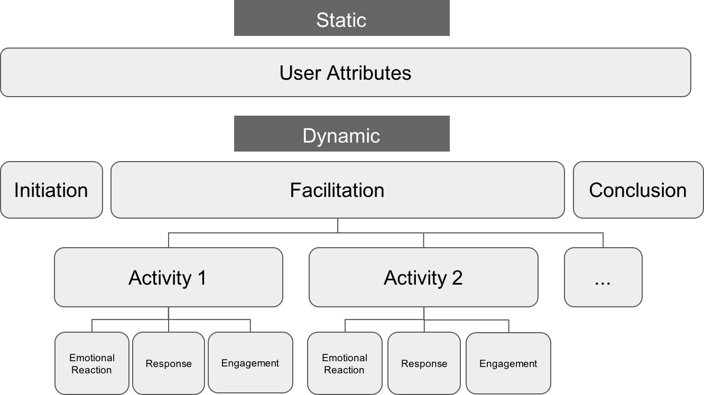
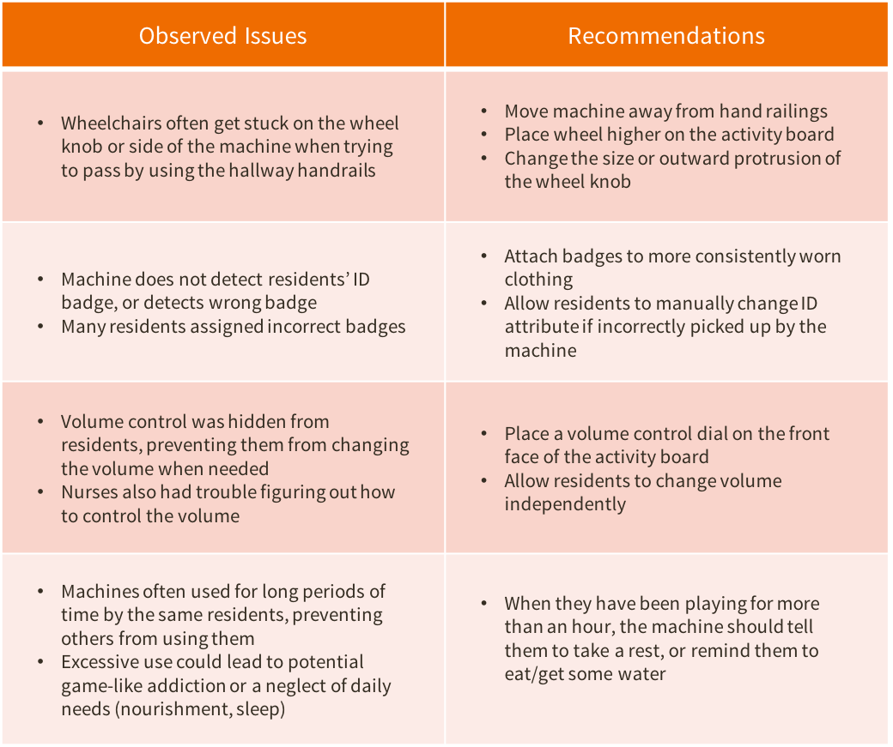

Sitemapping
During my summer internship at Indigo I had the opportunity to work on the gamification of their mobile application, as an extension of their current shopping experience. The desire to introduce game-like functionality within their current app came after the release of Pokemon GO that summer; Indigo carried lots of Pokemon-related merchandise and was looking to capitalize on this craze. They wanted to capture the essence of Pokemon GO, using a similar “discover & collect” concept to draw in its fan base, while staying true to Indigo’s vision and core values as a "music and cultural department store".
Although unable to draft a prototype due to time constraints, the idea became a great starting point for the Indigo mobile development team. With a “book hunt” and quiz element to it, combined with prize-winning competitive gameplay which connected to Indigo’s current points-rewards program, it was creative and fun enough to draw in younger kids, yet sophisticated enough to appeal to older customers.
A Usability Case Study
For this case project, we were tasked to analyze, test, and redesign Spotify's current desktop application interface to improve its overall user experience. As one of the most popular music streaming services out there, Spotify's interface design is far from perfect. Although there were plenty of task functions that could have been improved, we chose to focus on one we thought was most important: the ability to create and add songs to a new playlist.
We started by reviewing how Spotify currently works, using a Hierarchical Task Analysis diagram to visually break down its functions into subtasks:
 After observing how users went about creating a new playlist, we found several issues with the interface:
After observing how users went about creating a new playlist, we found several issues with the interface:


Having selected issues which we thought needed the most attention, we then brainstormed ways of solving each issue. We asked ourselves hypothetical questions such as “What would be more convenient?”, “What is more intuitive?” or “What is confusing about this task?”. After discussing our individual sketches and design alternatives, we combined the most impactful solutions to form a final low-fidelity prototype.
The final prototype integrates several aspects of the design alternatives, which were chosen based on their
cohesiveness, adherence to design principles and Nielsen’s Usability Heuristics, as well as overall contribution to
improving task flow. The sketches shown below outline the features of our proposed interface design as a user
attempts to create and add songs to a new playlist.

To see if our proposed design was actually effective, we conducted a comparative usability test, identifying
strengths and weaknesses along the way. We tested 6 different users from various age groups (high school/university
students, working adults) having different levels of music streaming expertise. For each design, users were given
instructions to create a new playlist and add songs to it, and after completing all test runs, users were given a
survey to complete.
Test data was collected using a variety of both quantitative and qualitative methods. Qualitative methods (such as
video recordings, notes on user thought processes, user comments and suggestions) helped measure the usability of
our proposed interface as a standalone design, while quantitative methods (such as time until task completion,
number of prompts needed, design rankings) were used to compare the proposed design to the current interface.
Our results showed a strong overall preference for the proposed design. Not only did its survey question rankings
surpass those of the current interface, we also found that users were able to perform the task given to them 49%
faster using the proposed design versus the current interface.

Although the prototype compared well quantitatively, our qualitative results also highlighted a few weaknesses in our design.
Using retrospective video evidence and written user feedback, we were able to identify a few usability issues that could be
addressed next in future iterations of the design.
User Research & Video Analysis
As an undergraduate research assistant under the supervision of Dr. Mark Chignell, I worked on two initiatives—the Ambient Activity
Technologies (AAT) and Centivizer projects— both which dealt with the design and implementation of meaningful activity interventions
for those with dementia or other cognitive impairments.
On the Centivizer project I helped draft designs for several new activity modules, the goal being to maintain/improve cognitive
ability and encourage user independence in performing Activities of Daily Living (ADL) such as eating, dressing, walking etc.
These “Centivizers” are smaller, portable units which reward users with coins and can be assembled together as one larger modular system.
For the AAT project, I was involved primarily in the user testing and evaluation phase, where I worked with a team of students to conduct
extensive video analyses on data collected from activity machines currently in place across 4-6 long term care facilities. Using a taxonomy
system that I helped to develop, I was able to take note of how users were interacting with the machines, how they seemed to feel about it, and
ultimately, find ways in which we could improve the design.
Before starting any designing or testing, I did a thorough review of existing literature--understanding the fundamental psychology
behind tasks used to measure cognition and how reward-based motivation might come into play (think Lumosity or other brain-training
games), reviewing usability guidelines on designing for people with dementia, researching state-of-the art technologies and exploring
newly emerging areas in the field such as ADL independence.
For the AAT, I was required to do additional research into the kinds of tools and methodologies that were used in other studies
to analyze large amounts of video data, as we had over 4000 logs (and counting) to review. After testing out different video analysis
tools our team didn’t quite find what we needed, so we went back to the drawing board to design our own methodology.
Finding a consistent and objective way to analyze these videos was one of our biggest concerns. Using a structured taxonomy/tagging
system would help maintain consistency across the entire team, but we had to ensure that our taxonomy would be able to cover both
qualitative (e.g. comments) and quantitative (e.g. response time) feedback. It was a struggle finding a balance between structure
and flexibility, objectivity and subjectivity. At what point does being objective lose us more value than could be gained by a richer
(but ultimately more subjective) coding taxonomy, even if it carries more bias?
Agreeing on a way to code emotion, for example, was difficult; while there are hundreds of possible emotions out there, we
decided to classify each emotion into one of four spectrums based on valence (pleasant/unpleasant) and arousal (intense/mild):
 Adapted from Russell, J. A. (1980). A circumplex model of affect. Journal of Personality and Social Psychology, 39, 1161–1178.
Adapted from Russell, J. A. (1980). A circumplex model of affect. Journal of Personality and Social Psychology, 39, 1161–1178.
Below is a high-level breakdown of our final coding taxonomy, with both static and dynamic attributes:

We reviewed over 4000 video logs, machine-recorded event logs, and usability surveys. We made visits to each long-term care facility participating in the study to see how residents were using the AAT machines on-site. We made observations of the environment and asked caregivers whether they thought these ambient activities were indeed helping to decrease their workload stress.
We compiled our video coding results using a statistical software package and saw some interesting trends with regards to female
vs. male usage, independent vs. dependent facilitation, and correlations between emotion and certain interactions. We got mostly
positive comments from nurses, who saw an increase in resident engagement and positive interaction within the group, and little to
no agitation while using the machines. Individual resident usage times varied greatly, but most were able to use the machines on their
own, with some showing great interest in the activities.
Combining our general observations with quantitative results and the explicit written/verbal feedback we had collected on-site,
I put together some key insights that we eventually shared with the KeebeePlay manufacturing team. We presented the most pressing
usability issues and gave recommendations for the improvement of future iterations of the design, shown below.

High-fidelity Prototyping
I attended a hackathon where we were given 24 hours to develop and pitch an idea for a startup venture, with the theme being "improve the way we work". We came up with a design for a posture-tracking device that would provide users with real-time corrective feedback by sending them notifications through a compatible mobile application. I was responsible for designing the functionality and user interface of the mobile application to be paired with our product, as well as the logo.
We showcased our product in a business pitch to a panel of judges, and were met with praise for the idea of pairing our physical product with a compatible mobile application. The high-fidelity prototype proved to be a useful way of increasing the tangibility or “realness” of our product as it effectively attracted attention toward important aspects of our device’s functionality.
Website Redesign

Check back for more updates!
App design
See the pitch.
(Skip to 5:45 for the demo)
Check back for updates!